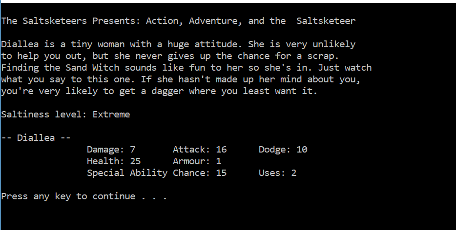
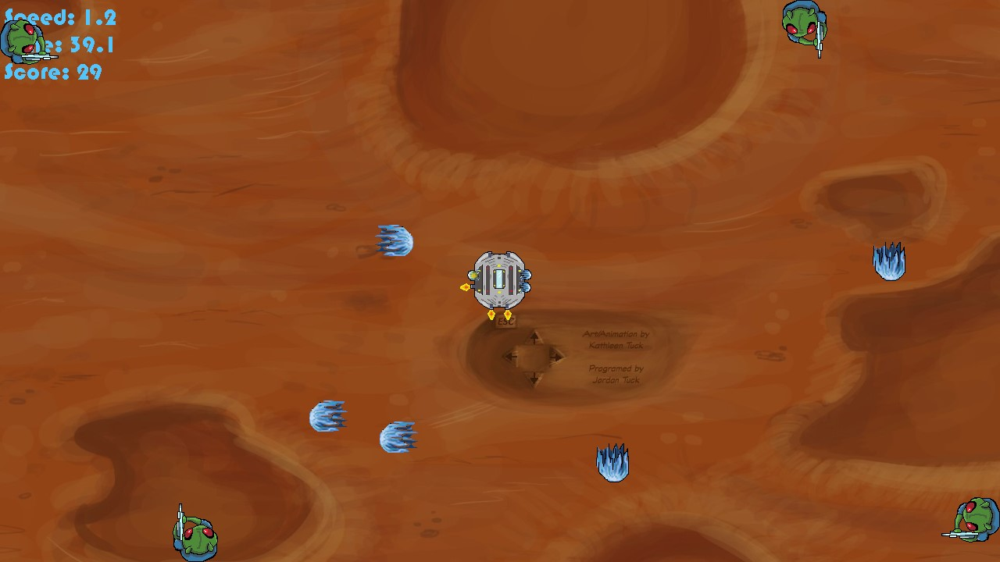
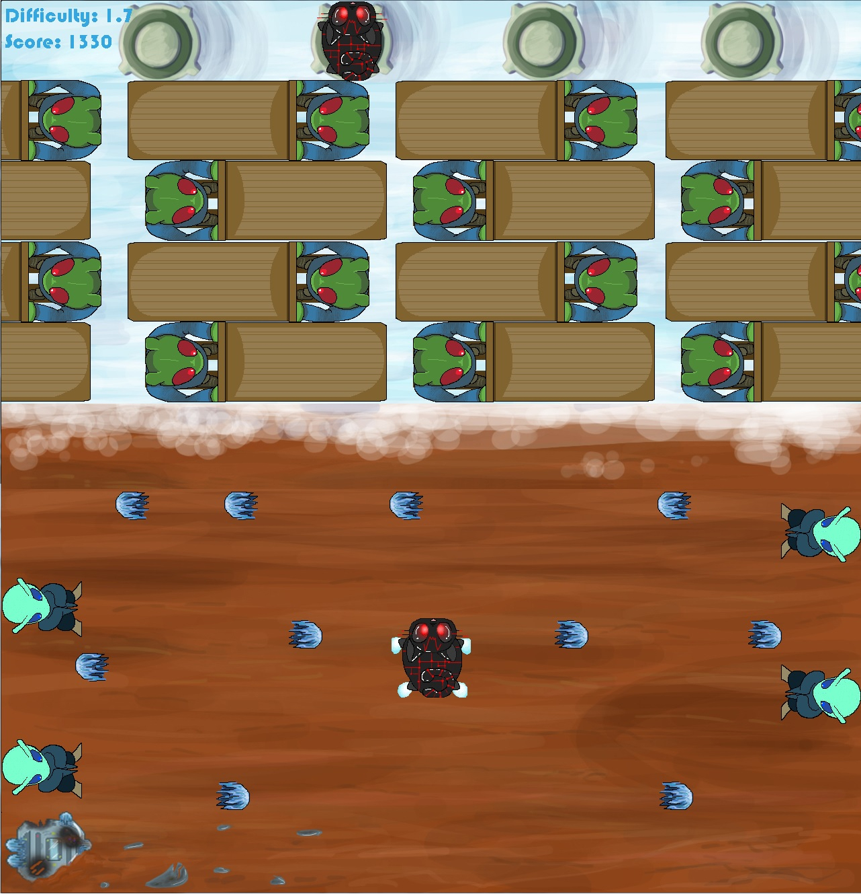

The Saltsketeers and the Sand Witch (C++ text based adventure)(2018)
Click to Download
|
"You and a member of the Saltsketeers are lost in the desert. Find your way back to the party before you subcumb to the Sand Witch." |
 |
|
"Mars is a cold place where wind and snow and aliens make a deadly combination. Stay sharp or you will never escape this frozen planet." |
 |
|
"Shocks, the intrepid cyborg space exploring cat and his friends, have crash landed on Mars.
Now they must use all their fancy "foot" skills to keep from the icey alien's grip" |
 |